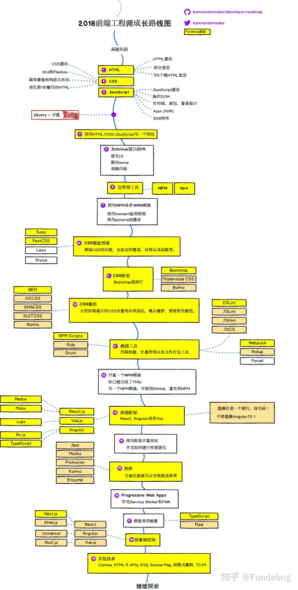

(一)初识前端
刚开始对前端的认知就是可以写出很好看很炫酷的网页，但是当加入TF5工作室我发现前端包括好多东西，并且它深深的吸引了我，也下定决心自己以后也要写出炫酷的页面，要做一个前端工程师，但是刚刚入门的时候就会发现它没有想象中的难，也没有想象中的简单，时间投入的越多，收获的就越多，没有阅读就没有发言权，没有了解就不能感同身受，希望自己做着自己热爱的东西，然后越走越远吧~~~~
(二)学习路线
